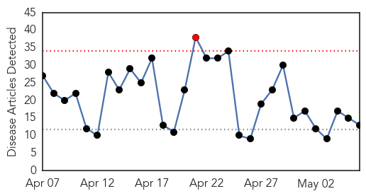
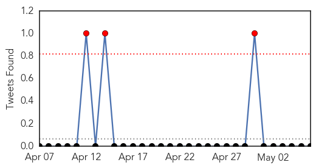
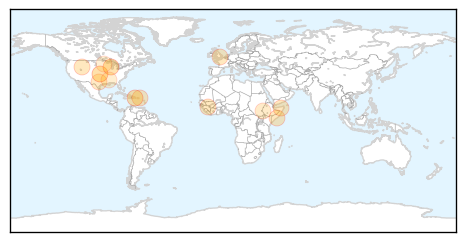
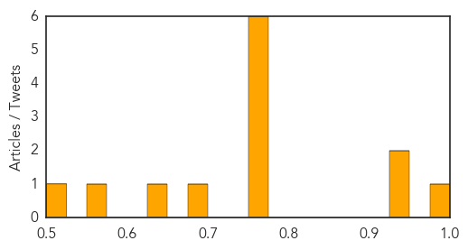

Toggle navigation
Early Warning
Daily Alerts
Influenza
May 06, 2015
Compare to:
-
Dengue Fever
Hemmorhagic Fever
Mold/Fungal Infection
Meningitis
Pertussis / Whooping Cough
Middle East Respiratory Syndrome
Cholera
Hepatitis
Chikungunya
Yellow Fever
Bubonic Plague
West Nile Virus
Swine Flu
Ebola
Measles
Unknown
Mumps
30 Day Trends
Web: 1
alerts
, 0
warnings
Twitter: 1
alerts
, 0
warnings
Top Articles:
0.993
Stay careful and safe
0.943
Virus continues to spread
0.930
Medical societies call for calm regarding Influenza A
0.751
May 6, 2015 Archives
0.751
May 6, 2015 Archives
0.751
May 5, 2015 Archives
0.751
May 5, 2015 Archives
0.751
May 5, 2015 Archives
0.751
May 5, 2015 Archives
0.694
Does ISIS Have Any More Guys in the U.S.?
0.640
Aid group targets pneumococcal diseases in South Sudan refugees
0.559
Poultry losses top 21M birds
0.516
Club Sandwiches Survive Bird Flu Killing 4 Million Turkeys
Top Tweets:
No tweets found for May 06, 2015
Web/News Articles

Tweets

Article Locations

Article Confidences
